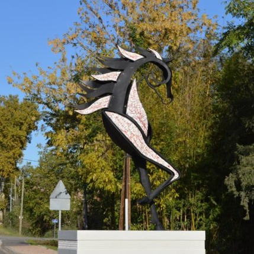

Cette oeuvre d'art, inaugurée le 17 octobre 2020, a été réalisée par la faïencière martraise Stéphanie Joffre et le sculpteur Emmanuel Kieffer. Placée à l'entrée de la ville, elle permet d'affirmer l'identité de Martres-Tolosane autour de la faïence et des métiers d'art.
Cette sculpture rend également hommage à un personnage emblétique de la ville. De qui s'agit-il? ?